2.6.yoloV4算法详解¶
学习目标
- 了解yoloV4网络架构
- 知道目标检测中常见的数据增强方法
- 知道yoloV4的损失函数的计算方法
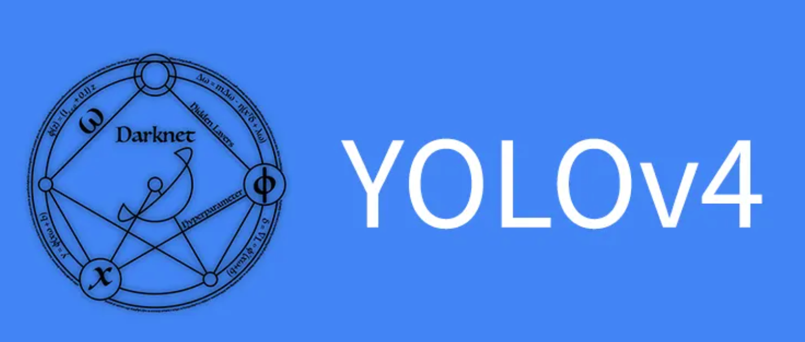
1. 算法简介¶
YOLO之父在2020年初宣布退出CV界，YOLOv4 的作者并不是YOLO系列 的原作者。YOLOV4是YOLO系列一个重大的更新，其在COCO数据集上的检测精度和检测速度，并得到了Joseph Redmon的官方认可，被认为是当前最强的实时对象检测模型之一。
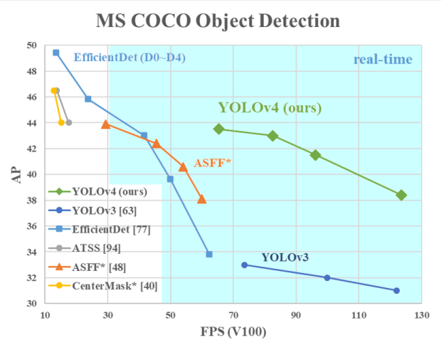
yoloV4作者总结了目标检测的各种技巧，然后经过筛选，排列组合，挨个实验（ablation study）哪些方法有效，提升了yolo在COCO数据集上的检测效果。总体来说，Yolov4并没有创造新的改进，而是使用了大量的目标检测的技巧，从上图中可以看出，在COCO数据集上，yoloV4的检测速度和检测精度都有较大的提升。
2.yoloV4的网络结构¶
在这里我们首先来看下它的网络架构，我们依然把它分成输入，backbone,Neck和输出端四部分，如下所示：
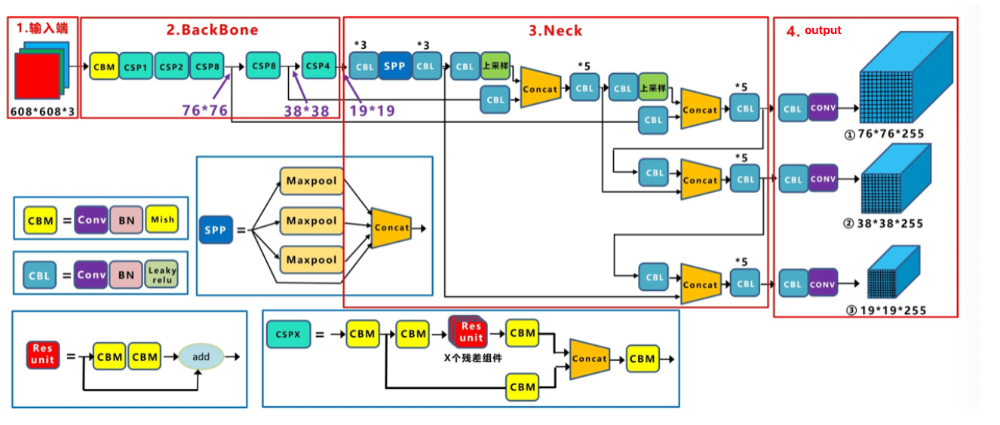
Yolov4的整体架构与Yolov3是非常相似的，不过使用各种新的算法思想对各个子结构都进行了改进。
-
基本组件：
-
CBM：Yolov4网络结构中的最小组件，由Conv+Bn+Mish激活函数三者组成。
- CBL：由Conv+Bn+Leaky_relu激活函数三者组成。
- Res unit：借鉴Resnet网络中的残差结构，让网络可以构建的更深。
- CSPX：由三个卷积层和X个Res unint模块Concate组成。
-
SPP：采用1×1，5×5，9×9，13×13的最大池化的方式，进行多尺度融合。
-
其他基础操作：
-
Concat：张量拼接，通道维度会扩充。
-
Add：张量相加，不会扩充维度。
-
Backbone中卷积层的数量： 每个CSPX中包含3+2×X个卷积层，因此整个主干网络Backbone中一共包含2+（3+2×1）+2+（3+2×2）+2+（3+2×8）+2+（3+2×8）+2+（3+2×4）+1=72。
接下来我们按照输入端（input）,backbone, neck, 输出端（output）四部分介绍yoloV4网络的内容。
2.1 输入（input）¶
yoloV4网络的输入依然要求是32的倍数，但大小不是固定的，在yoloV4中默认是608×608，在实际项目中也可以根据需要修改，比如320×320，一般是32的倍数。 输入图像的大小和最后的三个特征图的大小也是对应的，比如416×416的输入，最后的三个特征图大小是13×13，26×26，52×52， 如果是608×608，最后的三个特征图大小则是19×19，38×38，76×76。
yoloV4在输入端除了采用常规的反转、裁切、旋转等方法外，额外主要采用了CutMix和马赛克数据增强（Mosaic data augmentation），前者是将另一张图随机贴在一张图上，后者是将四张图拼接，目的都是使某些目标在脱离其常规的背景下进行训练，提高网络的鲁棒性，如下图所示：
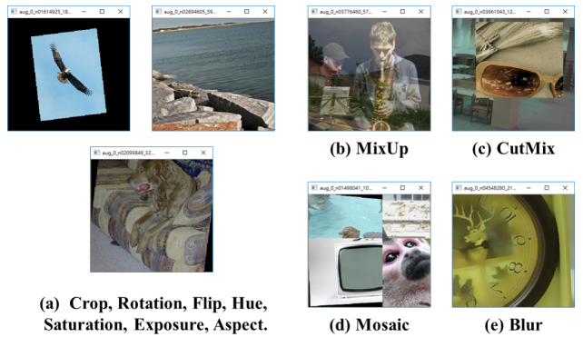
马赛克增强方式将4张训练图像按一定比例组合成1张。Mosaic增强方式使得模型能够学习如何识别尺寸小的物体，还能够帮助模型在图像的不同部分定位不同类型的目标。
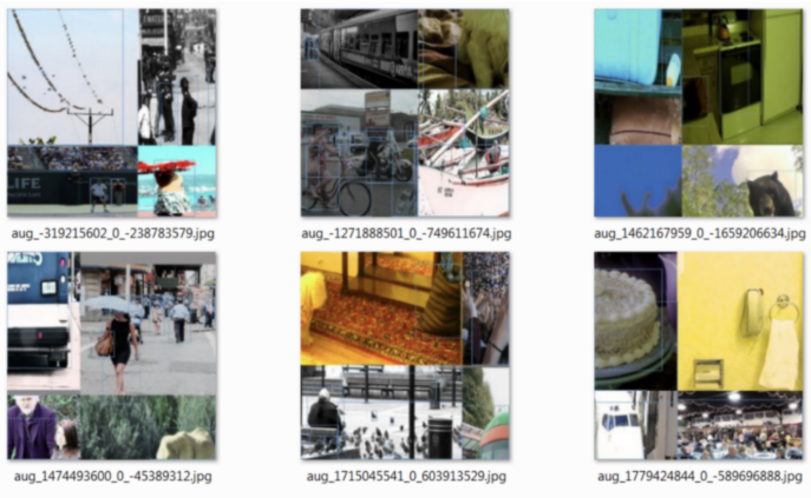
2.2 backbone¶
yoloV4网络的backbone是在yoloV3的基础上进行的改进，使用的是CSPDarknet53，如下图所示：
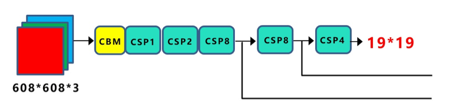
CBM模块中使用了mish激活函数：
mish是非单调神经激活函数，平滑的激活函数允许更好的信息深入神经网络，从而得到更好的准确性和泛化。根据实验，该函数在最终准确度上比Swish(+0.494%)和ReLU(+ 1.671%)都有提高。
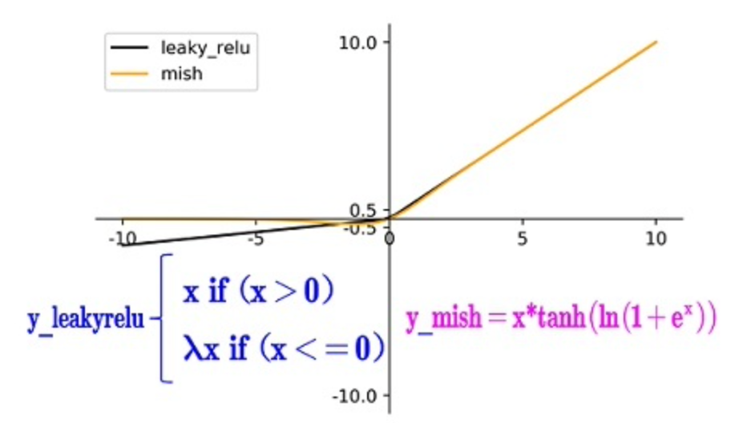
V4的作者在backbone中使用了mish激活，其他部分依然使用leakyrelu激活。
backbone中包含5个CSP模块，每个CSP模块在第一个CBM是卷积步长为2，下采样一次：
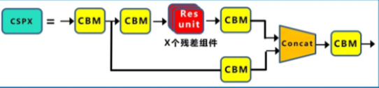
一共有5个CSP，输入图像是608x608，所以特征图变化的规律是：608->304->152->76->38->19，经过5次CSP模块后得到19x19大小的特征图。
2.3 neck¶
在yoloV3中作者使用FPN进行特征融合，V4中除了使用FPN之外还增加了PAN结构：
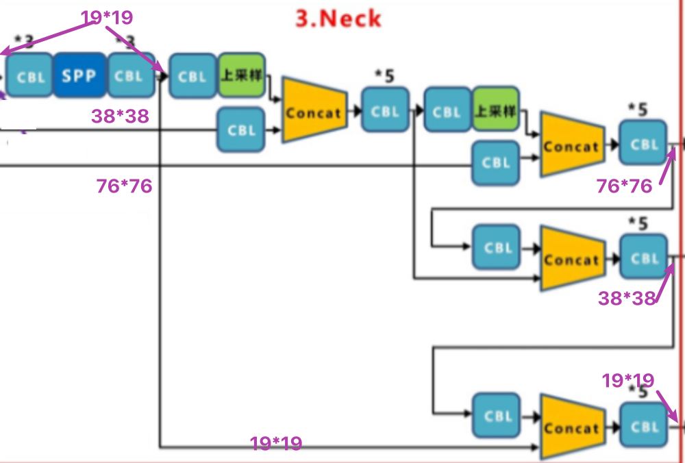
送入到Neck部分的特征图是19x19,38x38,76x76的大小，融合后的输出特征图的大小也为19x19,38x38,76x76，下面我们来看下V4中是如何来完成特征融合的。
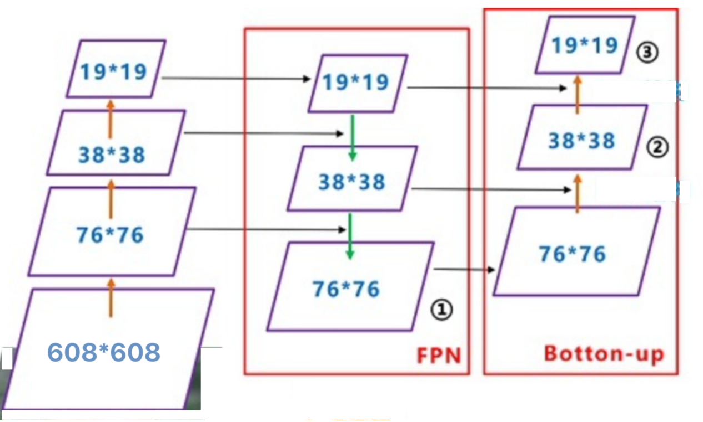
整个融合过程是首先bacbone进行特征提取获取特征图，其次经过FPN网络进行融合，这一部分与V3是一样的，V3中直接送入输出端进行预测。而在V4中还要进行最后一步的上采样进行融合，最后在送入输出部分进行预测。所有的融合都通过concat来进行。
2.4 输出（output）¶
V4的输出端与V3的输出端是一样的，都是输出3个尺度的结果，具体不再赘述。
3.模型训练¶
yoloV4中的模型训练与预测和YoloV3几乎是一样的，包括正负样本的设置方式，损失函数的构成及训练过程。唯一不同是在计算回归值得损失时，V4中采用了IOU的损失，接下来我们看下几种IOU的损失：以下图为例，大家先回顾下V3中边框回归损失的计算方法。
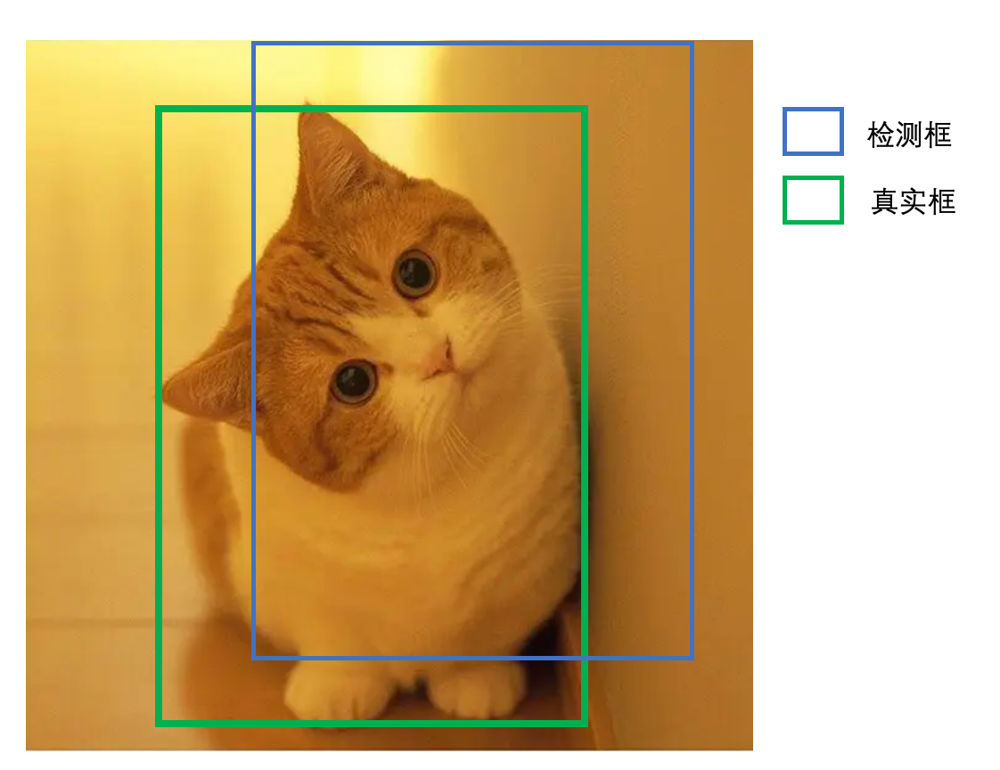
3.1 IOU损失¶
IOU损失非常简单，直接使用检测框与真实框的交并比并取对数作为回归的损失函数，如下所示：
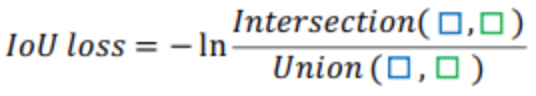
很容易地知道，当预测边界框与真实边界框没有交集时，IOU=0，这时无法计算损失值趋于无穷大，也就没有办法优化网络。
3.2 GIOU损失¶
GIOU损失是为了缓解IOU损失的问题提出来的，我看下GIOU的计算方法：
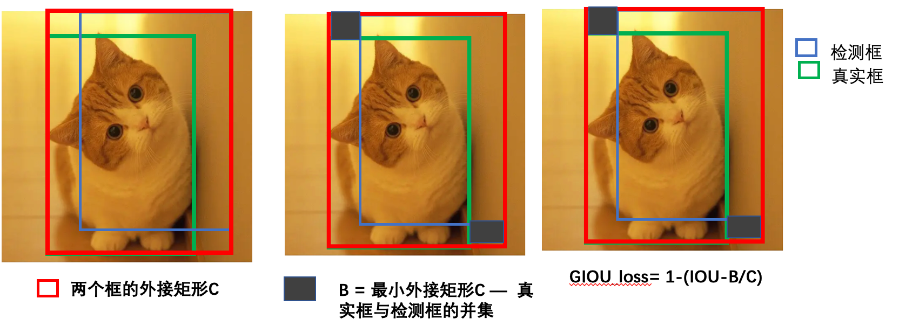
这种方式存在的问题是当检测框在真实框内部或正式框在检测框内部时，无法衡量差集，损失函数退化为1-IOU，下述3种的损失是一样的，不利于边框的回归。
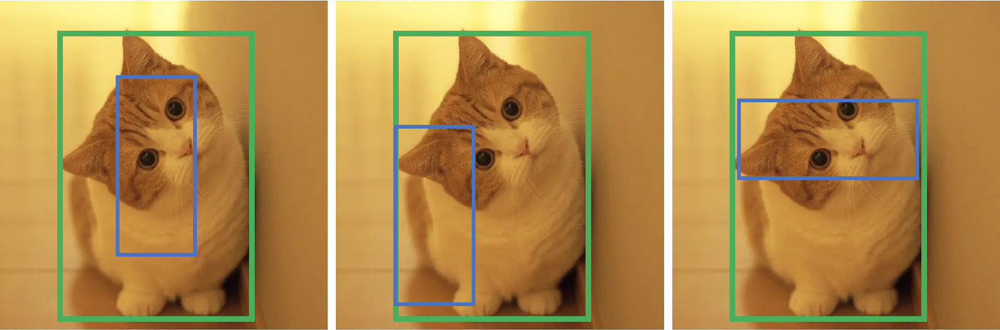
3.3 DIOU损失¶
为了缓解上述GIOU中的问题，又提出D_IOU损失，在DIOU损失中就考虑的真实框的中心点距离，重叠面积和长宽比等因素：
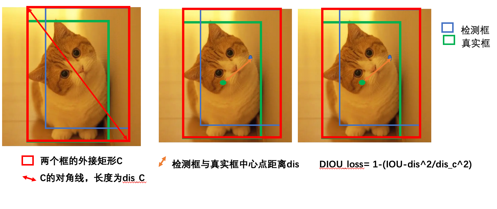
dis_c越小说明C的面积越小，dis越小说明两个框距离越近。
3.4 CIOU损失¶
CIOU在DIOU基础上增加了一个影响因子，将检测框与真实框的长宽都考虑进去，定义如下：
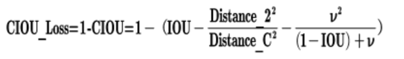
其中v是衡量长宽比一致性的参数，定义为：
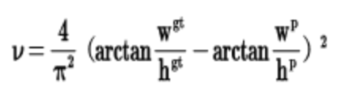
yoloV4中在回归边框时，采用CIOU_loss,使得检测框的精度更高一些。
4 模型预测¶
与yoloV3类似，模型训练好后，我们将图片resize成608x608的大小，送入到yoloV4网络中，输出3个尺度的预测结果，每个结果中包含边框坐标（4个数值），边框置信度（1个数值），对象类别的概率（对于COCO数据集，有80种对象）。我们筛选出置信度较高的检测结果（>0.5），在采用DIOU-NMS算法选出最有可能是目标的结果，就完成了目标的检测。
总结
- 了解yoloV4网络架构
输入，backbone，neck，输出
- 知道目标检测中常见的数据增强方法
马赛克增强:小目标检测
-
知道yoloV4的损失函数的计算方法
IOU_loss,GIOu_loss,DIOU_loss,CIOU_loss